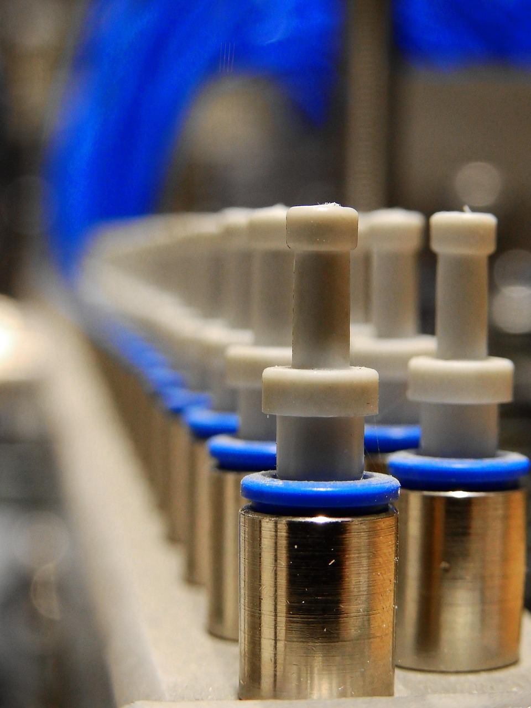

Warcaby
Projekt warcabów wykonany w Javie. Zawierał on funkcjonujące GUI oraz technologię klent-serwer
Programy kompresujące i dekompresujące
Proramy bazujące przede wszystkim na kodowaniu Huffmana, kodowaniu słownikowym oraz kodowaniu arytmetycznym.
Sztuczna inteligencja do rozpoznawania czy grzyb jest trujący
Projekt sieci neuronowej szkolonej na bazie danych dotyczących różnych gatunków grzybów. Określała ona czy grzyb jest jadalny, czy lepiej go unikać.
Inne

Inne projekty obejmowały takie aspekty jak:
Implementacje licznych algorytmów i struktur danych - drzewa, algorytmy sortowania, algorytmy grafowe
Kalkulatory w różnych wariacjach.